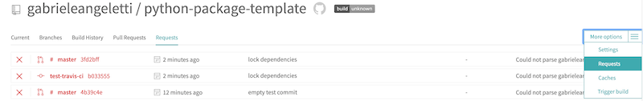

Things I have learned at Lyft: Continuous Integration

A while ago I was working as a contractor for an e-commerce company. There were only a couple of developers, and a lot of work to be done. In normal conditions there would have been enough people to do the job. Unfortunately, there was one issue: making changes was incredibly painful. The existing codebase was quite large and had no tests. Not even a single one. The team was basically living through the day, spending the majority of time fixing bugs rather than adding new features. Bugs were not fixed through extensive refactoring, solving the root cause of the problem, but by adding patches that introduced more issues than they were solving. APIs were not clearly defined, which led to changes in one component to break a totally unrelated part of the project. Deployments were a completely manual and error-prone process, and the only way to deploy the app on a new machine was to install everything yourself, from scratch.
I was still a university student at that point. In fact, this was my very first job as a developer. Making seemingly trivial changes was so hard that I began to seriously question my skills as a software engineer. It was my first time looking at a “real-world” codebase, so I just assumed I was the problem. Years after that, I now know I wasn't the problem. Working on such a codebase using almost all the bad practices of modern software development would be frustrating for anyone. I'm sure many of you have had such an experience.
Working at a top-tier tech company such as Lyft, I got the chance to learn and employ best practices on really high-quality codebases. The development experience has been completely different for me ever since. There is a lot to be said about the things I have learned at Lyft, and I could only scratch the surface here. This article focuses on one of those things: Continuous Integration (CI). I'll tell you the main advantages of having a CI system, and show you a basic Travis CI setup with one of my public github repos.
Continuous Integration
For those of you who never heard about it, Continuous Integration is a software development practice where each person's changes are integrated very quickly, often within hours, into a shared development state, often the master branch of a VCS repository. Crucial to the practice is that each integration has automated tests that check for correctness, and scripts that builds the artifacts that are needed for deployment. There are many advantages of adopting CI. On the top of my head, I can think of at least these ones:
- Much faster development iterations
- Tighter feedback loop on all changes, making it easier to debug issues and pinpoint what caused what
- Less conflicts between people's changes
Continuous “*”
You might have heard different terms matching the Continuous * regular expression. The most common ones are Integration, Delivery, and Deployment. The differences are:
- Continuous
Integrationruns an automated suite that builds the software and tests your change. If everything goes well, you are allowed to integrate the change to the master branch. No production deploys are involved in CI - Continuous
Deliveryis Continuous Integration plus the things required for a production deployment. The actual deployment is not triggered, but only prepared. Someone from the business usually decides when and how often to deploy, which is usually triggered manually - Continuous
Deploymentis Continuous Delivery plus the actual production deployment is also automated
There's a lot to be said about the differences between them, and how they fit to different use-cases, but in this post we are only talking about the first one.
Why you can't simply “add CI to my project”
The truth about CI is, you can't simply “add it”. There are certain requirements your project needs to meet. In particular, you can't be talking about CI if you have not automated building and testing your software. If a build requires manual steps, or if tests are not comprehensive enough to give you confidence in your changes, then you can't effectively implement CI. Two things at least need to happen:
- An automated build process, ideally in a single command
- A set of tests that give you enough confidence in the quality of your change
The build script should include everything your system needs to run. If the server needs a database, it should be created from scratch, including the schema. It should not rely on some existing infrastructure. In addition to that, and I cannot stress enough how important this is, builds should be fast. If it takes hours to build then you can't reap all the benefits CI has to offer. This is usually achieved by only building the components that actually changed, or by not building things that are completely unrelated to your change.
Travis CI
There exist many CI solutions out there, each one with its pros and cons. The reasons I use Travis CI for my personal projects are:
- It's a hosted SaaS, meaning I don't have the hassle of hosting it myself
- It's free for open source projects
- It's widely used, meaning that the problems I will inevitably encounter are already solved by someone else
I'm not going to go into the details of how to setup Travis CI, because their getting started guide is very well written and easy to follow.
Once you're all set up, the next step is to create a .travis.yml file in the root of your repository. This is the main configuration file: it tells Travis what to do, how to do it and where to do it. I have configured my python package template repo to use Travis CI, and here is how the configuration looks like:
language: python
python:
- "3.7"
install:
- ./setup.sh
- pipenv install --deploy --dev
script:
- ./test.sh
In a nutshell: language says that the project uses Python, which will make Travis run inside a virtual environment created on purpose for the build. (python) specifies which Python version(s) we want to test with. You can also put multiple versions in there, and the tests will be run against all of them. (install) tells Travis how to build the software. The default for Python if you omit this line is pip install -r requirements.txt, but since I have a custom setup script and I use Pipfile instead of requirements.txt, I had to override that config. (script) tells Travis what to run - in this case a custom script I made which runs linting, type-checking and unit-testing. If all of this runs correctly, it means that:
- The software still builds, as in I haven't introduced conflicts between dependencies or anything like that
- My change doesn't break any existing code (this of course depends on the quality of the tests I write)
One small tip: when I first added the .travis.yml file, builds were not being triggered for my pull requests and I couldn't understand why. It turned out there was a syntax error in the file, which I discovered by looking at the Requests section of the Travis CI dashboard. You can access it through the dropdown menu on the right:

Final thoughts
This article only scratches the surface of the things you can do with CI. The benefits of the approach can hardly be overstated, and it will make your team save an incredible amount of time, and at the same time increasing the quality of the software you deliver. I encourage you to read more about the topic. One pointer I can give you is this great paper by Martin Fowler, which is the best explanation of the technique I have ever come across. And if you are not using CI, I strongly recommend that you give it a try.
Disclaimer: this article is not about any specific technology or approach that is actually in use at Lyft. It's just a small summary of what I have learned about CI while working there.